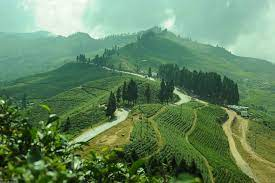
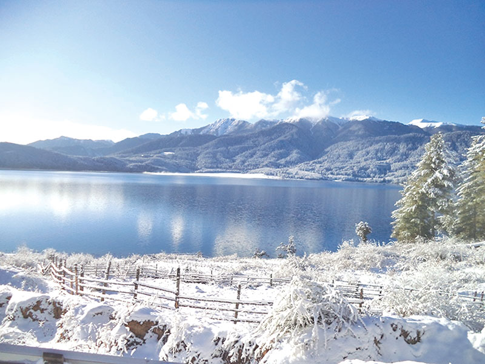

Places
Chitwan National Park
Chitwan National Park (CNP), laid out in 1973, was Nepal's most memorable National Park. Situated in the Southern Central Terai of Nepal, it previously reached out over the lower regions, the property covers an area of 93,200 hectares, stretches out more than four locale: Chitwan, Nawalparasi, Parsa and Makwanpur.

Pokhara
Pokhara is a city on Phewa Lake, in focal Nepal. It's known as a passage to the Annapurna Circuit, a famous path in the Himalayas. Tal Barahi Temple, a 2-story pagoda, sits on an island in the lake. On the eastern shore, the Lakeside region has yoga focuses and eateries. In the city's south, the International Mountain Museum has shows on the historical backdrop of mountaineering and individuals of the Himalayas

Kathmandu
Kathmandu, Nepal's capital, is set in a valley encompassed by the Himalayan mountains. At the core of the old city's mazelike rear entryways is Durbar Square, which becomes frantic during Indra Jatra, a strict celebration including veiled moves. A significant number of the city's memorable destinations were harmed or obliterated by a 2015 seismic tremor. Durbar Square's castle, Hanuman Dhoka, and Kasthamandap, a wooden Hindu sanctuary, are being reconstructed

Sagarmatha basecamp
There are two headquarters on Mount Everest, on inverse sides of the mountains: South Base Camp is in Nepal at an elevation of 5,364 meters (17,598 ft) (28°0′26″N 86°51′34″E), while North Base Camp is in Tibet, China at 5,150 meters (16,900 ft) (28°8′29″N 86°51′5″E) The headquarters are simple camping areas at the foundation of Mount Everest that are utilized by hikers during their climb and plunge; they are additionally visited by explorers. South Base Camp is utilized while climbing through the southeast edge, while North Base Camp is utilized while climbing by means of the upper east edge.

Ilam
Ilam, the Queen of Hills, is a delightful bumpy region in eastern piece of Nepal. Arranged 600 km east from Kathmandu, the place where there is rising sun in Nepal is most popular for its tea plants everywhere. llam is additionally home to various types of bird and creatures, including the jeopardized Red Panda. Fundamentally, in the event that you are a tea garden lover in Nepal make a Tea Garden Tour and catch magnificence of individuals of various societies and nature living respectively calmly on the lower regions of Mount Kanchenjunga.
Rara Lake
Rara Lake otherwise called Mahendra Lake is the biggest new water lake in the Nepalese Himalayas. It is the principal element of Rara National Park, situated in Jumla and Mugu Districts of Karnali Province. Rara National Park extends north of 106 km²
